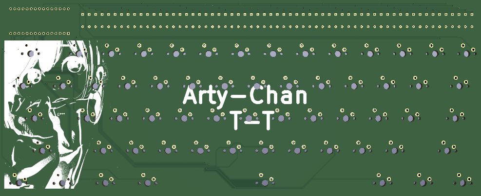
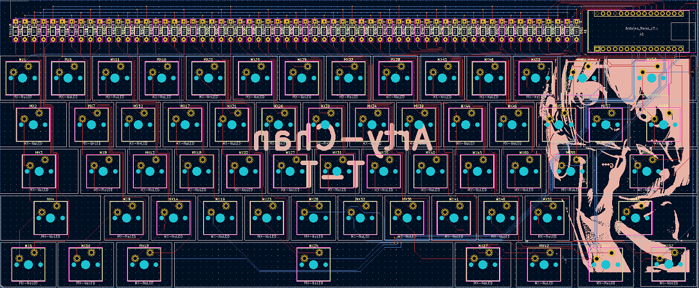

Driven by my passion for mechanical keyboards and inspired by the vibrant community on Reddit, I was impressed by the innovative ways in which members utilized the ATmega328P microcontroller chip. This ignited my desire to create a customized keyboard PCB design. My pursuit of mechanical keyboards has not only been a source of enjoyment but also a catalyst for exploring a variety of technologies including Linux, microcontrollers, and microprocessors.
It is noteworthy that the project made use of KiCad 6.0 in conjunction with various open source libraries consisting of footprint and IC symbols. The specific libraries employed include MX Alps Hybrid, keyswitch kicad library, keebio parts, and Cherry MX Breakout Board. To ensure the accuracy of my work, please find the link to my GitHub directory below: KeyBoard Project GitHub Link. Additionally, please note that Version 1 of the project will be prominently displayed throughout the webpage as an illustrative example.

The aforementioned image represents the ultimate rendition of the 3D Keyboard PCB. While it is true that many of the traces may not be ideally located and were instead placed in the most practical manner, the project was inspired by the Mech Wild Mercutio keyboard. It was intended to feature all IC components in plain view to create an aesthetically pleasing appearance for the user. However, it should be emphasized that version 1 of the project does not incorporate stabilizers for certain keys such as space, enter, backspace, and tab.
